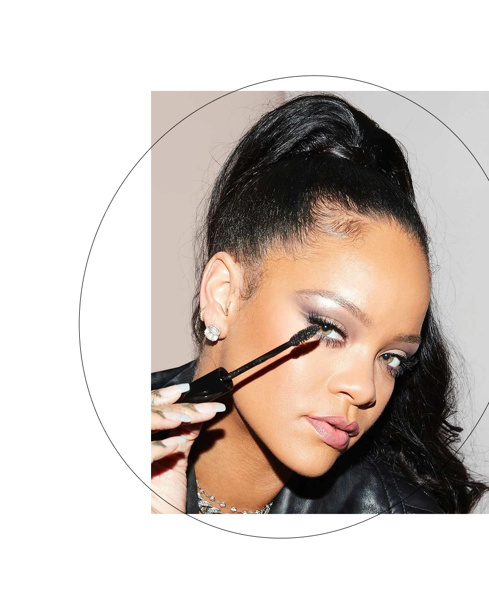
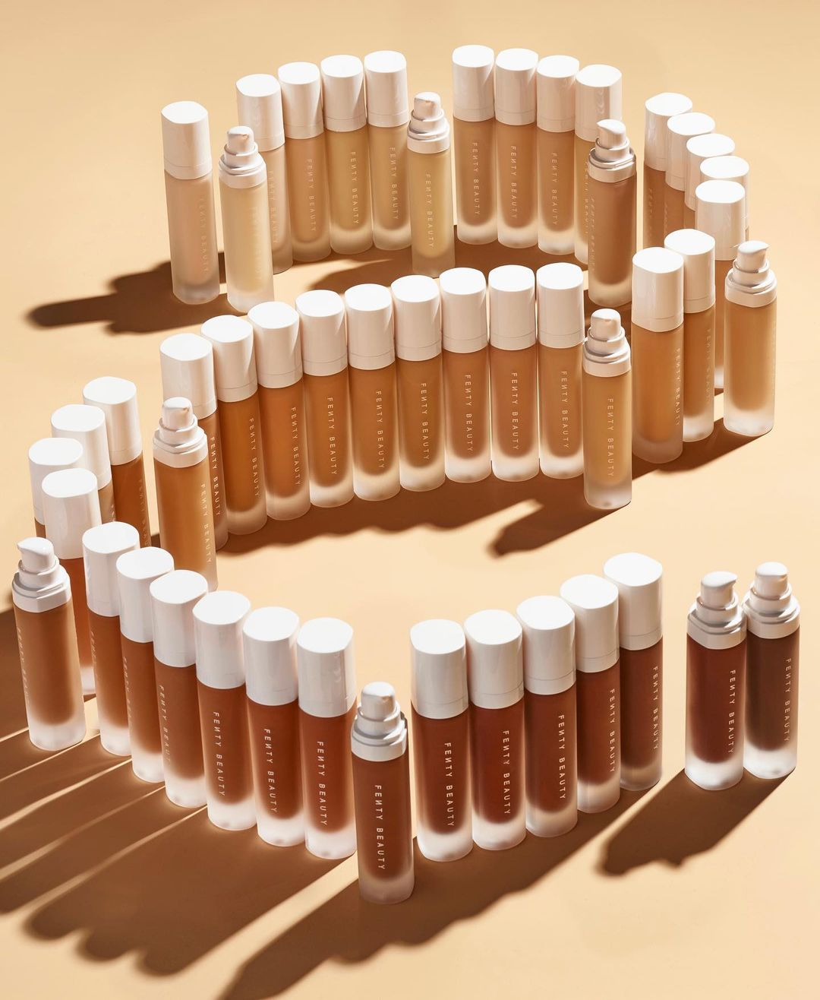

ABOUT

Before she was BadGalRiRi: music, fashion and beauty icon, Robyn
Rihanna Fenty was a little girl in Barbados transfixed by her
mother’s lipstick. The first time she experienced makeup for
herself, she never looked back. Makeup became her weapon of choice
for self-expression—a way to radiate her ever-changing mood—and it
powered a fearless take on beauty that helped her become the
boundary-breaking icon she is today. Rihanna was inspired to create
Fenty Beauty after years of experimenting with the best-of-the-best
in beauty—and still seeing a void in the industry for products that
performed across all skin types and tones. She launched a makeup
line “so that people everywhere would be included,” focusing on a
wide range of traditionally hard-to-match skin tones, creating
formulas that work for all skin types, and pinpointing universal
shades. Fenty Beauty products are designed to feel lightweight, even
as they deliver buildable coverage that effortlessly layers, to
ultimately “make skin look like skin.”

Starting with Fenty Beauty foundation, face primer and Gloss Bomb,
she launched a makeup line “so that people everywhere would be
included,” focusing on a wide range of traditionally hard-to-match
skin tones, creating formulas that work for all skin types, and
pinpointing universal shades. From Pro Filt’r Soft Matte Foundation
& Hydrating Foundation that changed the game with 50 inclusive
shades, to the fan-fave concealer and setting powder, to the wide
shade range of cream blush. Fenty Beauty products are designed to
feel lightweight and love to be layered. Most importantly, Rihanna
creates makeup to inspire: “Makeup is there for you to have fun
with,” she says. “It should never feel like pressure. It should
never feel like a uniform. Feel free to take chances, and take
risks, and dare to do something new or different.”
